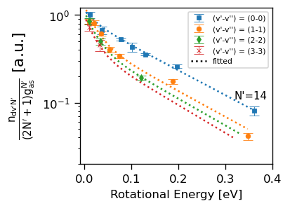
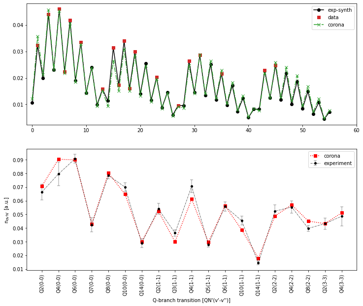
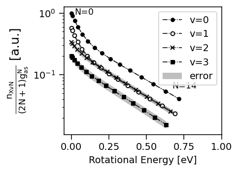
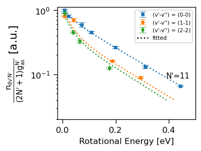
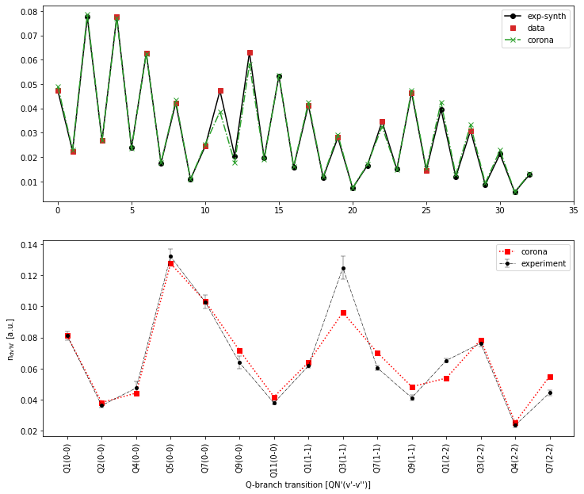
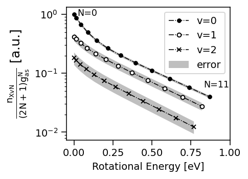

Coronal model example#
import sys, os
sys.path.insert(0, os.path.abspath("../../../"))
from fulcheranalyzer import coronalmodel as fcm
%matplotlib inline
import matplotlib.pyplot as plt
Deuterium#
# Load data, fit d-state with 2 Trot
arg = [150482,7,'Deuterium']
#arg = [152478,10,'Hydrogen']
isotop = arg[-1].lower()[0]
inte = fcm.read_intensities(*arg[:-1])
bp = fcm.BoltzmannPlot(inte,isotop)
bp.autofit()
Figure 8, D2#
#plt.style.use('./ishiharastyle.mplstyle')
bp.plot_popd_paper(stylename='color',ms=4)
#ticks_ishihara()
plt.ylim([2e-2,1.2])
plt.xlim([-0.01,0.4])
#gcf().set_size_inches(figsize(8))
fcm.set_tick_size(plt.gca(),*(0.8,5,0.6,2))
plt.gcf().set_dpi(120)

bp.print_fit_result()
bp.trotall.style.format('{:.0f}')
alpha = 0.761 +- 0.152
beta = 0.416 +- 0.058
Trot1 = 280 +- 88
Trot2 = 1783 +- 134
| d Trot1 | d er1 | d Trot2 | d er2 | X Trot1 | X er1 | X Trot2 | X er2 | |
|---|---|---|---|---|---|---|---|---|
| 0 | 280 | 88 | 1783 | 134 | 561 | 176 | 3572 | 268 |
| 1 | 270 | 85 | 1719 | 129 | 541 | 170 | 3443 | 258 |
| 2 | 260 | 81 | 1654 | 124 | 520 | 163 | 3315 | 248 |
| 3 | 250 | 78 | 1590 | 119 | 500 | 157 | 3186 | 239 |
como = fcm.CoronaModel(bp)
como.print_pop_shape()
como.coronal_autofit()
saved R-matrix found, loaded
vd = 0-3 Jd = 1-14
vX = 0-3 Jx = 0-14
Tvib = 7743 +- 557
#plt.style.use('./ishiharastyle.mplstyle')
como.plot_coronal_result()
axs = plt.gcf().axes
plt.sca(axs[0])

Figure 10, D2#
#plt.style.use('./ishiharastyle.mplstyle')
como.plot_popx_paper(ms=4)
#gcf().set_size_inches(figsize(8))
fcm.set_tick_size(plt.gca(),*(0.8,5,0.6,2))
plt.gcf().set_dpi(140)

Figure 12, D2#
#plt.style.use('./ishiharastyle.mplstyle')
como.plot_paper_compare(yerr=como.yerr_flat,ms=4)
plt.gcf().set_size_inches(fcm.figsize(19,ratio=6/14))
fcm.set_tick_size(plt.gca(),*(0.8,5,0.6,2))
plt.gcf().set_dpi(140)
plt.ylim(0,0.1)
(0.0, 0.1)
Hydrogen#
# Load data, fit d-state with 2 Trot
#arg = [150482,7,'Deuterium']
arg = [152478,10,'Hydrogen']
isotop = arg[-1].lower()[0]
inte = fcm.read_intensities(*arg[:-1])
bph = fcm.BoltzmannPlot(inte,isotop)
bph.autofit()
Figure 7, H2#
#plt.style.use('./ishiharastyle.mplstyle')
bph.plot_popd_paper(stylename='color',ms=4)
#ticks_ishihara()
plt.xlim([-0.02,0.5])
plt.ylim([2e-2,1.1])
fcm.set_tick_size(plt.gca(),*(0.8,5,0.6,2))
plt.gcf().set_dpi(120)

bph.print_fit_result()
bph.trotall.style.format('{:.0f}')
alpha = 0.734 +- 0.161
beta = 0.447 +- 0.059
Trot1 = 375 +- 127
Trot2 = 2079 +- 165
| d Trot1 | d er1 | d Trot2 | d er2 | X Trot1 | X er1 | X Trot2 | X er2 | |
|---|---|---|---|---|---|---|---|---|
| 0 | 375 | 127 | 2079 | 165 | 751 | 254 | 4168 | 331 |
| 1 | 355 | 120 | 1972 | 156 | 712 | 241 | 3953 | 314 |
| 2 | 336 | 114 | 1865 | 148 | 674 | 228 | 3738 | 297 |
comoh = fcm.CoronaModel(bph)
comoh.print_pop_shape()
comoh.coronal_autofit()
saved R-matrix found, loaded
vd = 0-2 Jd = 1-11
vX = 0-2 Jx = 0-11
Tvib = 6801 +- 753
comoh.plot_coronal_result()
axs = plt.gcf().axes
plt.sca(axs[0])

Figure 9, H2#
#plt.style.use('./ishiharastyle.mplstyle')
comoh.plot_popx_paper()
fcm.set_tick_size(plt.gca(),*(0.8,5,0.6,2))
plt.gcf().set_dpi(140)

Figure 11, H2#
#plt.style.use('./ishiharastyle.mplstyle')
comoh.plot_paper_compare(yerr=comoh.yerr_flat,ms=4)
plt.gcf().set_size_inches(fcm.figsize(19,ratio=6/14))
fcm.set_tick_size(plt.gca(),*(0.8,5,0.6,2))
plt.gcf().set_dpi(140)
plt.ylim(0,0.14)
(0.0, 0.14)